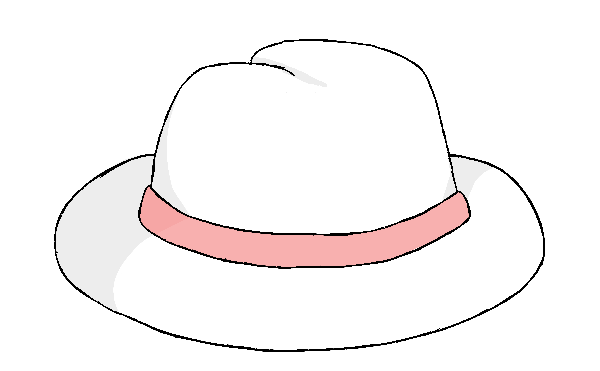

Em comunidades perto do rio, em dias de Festa Junina, é possível ouvir o som dos botos, observando a comoção da festa, especialmente as belas mulheres. Nas noites de lua cheia, o boto sai da água e se transforma num homem muito atraente, usando roupas brancas e um chapéu combinando. O homem flerta com as jovens moças e as tira da festa, levando-as para o leito do rio. No leito o homem cumpre seu único objetivo, engravida as garotas e retira seu chapéu, revelando o buraco no topo de sua cabeça, antes de pular na água e retomar sua forma de boto, nadando para longe. Quando as mulheres veem o boto indo embora, se desesperam, já entendendo o que aconteceu. Em comunidades próximas ao rio, é comum que filhas não sejam permitidas a ir em festas na lua cheia e é pedido que forasteiros nessas festas retirem seus chapéus para comprovarem que não são botos.